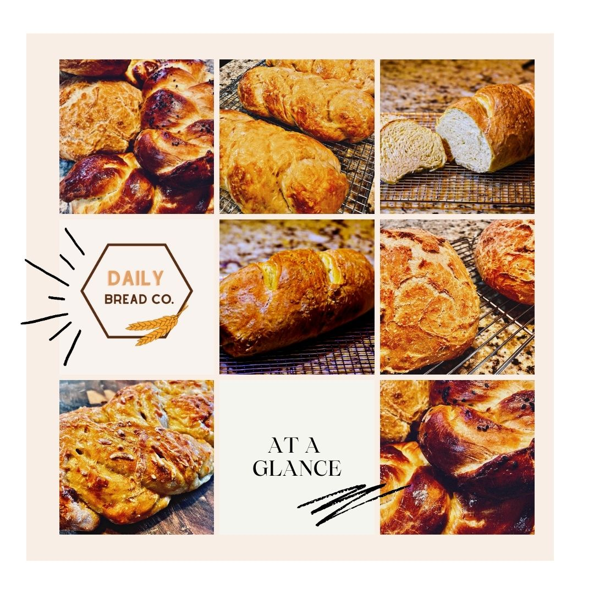

Bread

Description
Featured Artisan Bread from the Oklahoma bakery,
Daily Bread Co. This recipe will show you how to
make the delicious dough offered by the young baker.
Ingredients
- 3 cups Flour
- 1 1/2 cups Water
- 1/2 teaspoon Yeast
- 1 teaspoon Salt
Steps
- Mix all ingredients together
- Form into a ball
- Wrap bowl with saran wrap
- Let dough sit for 12-18 hours
- Preheat oven to 450 degrees F.
- Bake Dutch oven with lid for 30 mins
- Bake bread for 30 mins with lid
- Bake bread for 15 mins without lid
- Let cool and enjoy